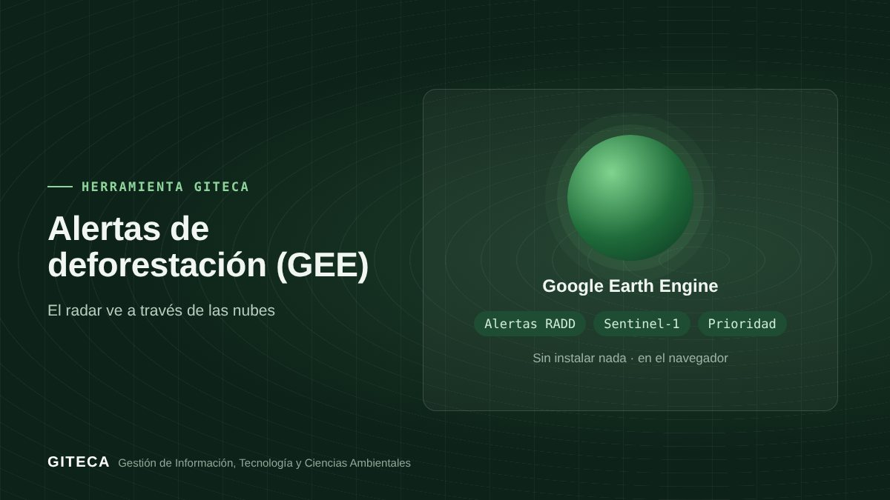

Alertas de deforestación en tu área, con prioridad de atención
App de Google Earth Engine que suma las hectáreas con alertas de radar RADD en tu área, por año y nivel de confianza, y asigna una prioridad de atención.
Abrir la app en Earth Engine ↗Gratis, sin instalar nada.

¿Cuántas hectáreas se han alertado dentro de tu título habilitante este año?
En la Amazonía las nubes ocultan buena parte de las imágenes ópticas. Las alertas RADD usan radar Sentinel-1, que ve a través de las nubes. Esta app las resume para tu área, por año y por nivel de confianza, y asigna una prioridad para planificar las verificaciones.
Antes y ahora
El proceso de siempre
- Descargar las alertas por separado.
- Recortarlas con los límites del área en un SIG.
- Sumar hectáreas por año y por confianza a mano.
Con la herramienta
- Dibujas tu área (título habilitante, parcela de corta o zona de interés).
- La app suma las hectáreas con alerta de confianza alta y baja desde 2019.
- Ves el gráfico por año y la prioridad de atención (baja, media o alta), y descargas la ficha.
Tiempos de referencia estimados por el equipo GITECA; varían según el tamaño del área y la experiencia del usuario.
Qué hace
- Hectáreas con alerta RADD (Sentinel-1, 10 m) desde 2019, por confianza.
- Gráfico de hectáreas con alerta por año.
- Prioridad de atención: baja (sin alertas), media (< 5 ha) o alta (≥ 5 ha).
- Ficha descargable en CSV, GeoJSON, KML o SHP.
Para quién es
Empieza en 3 pasos
- Abre la app en el navegador.
- Dibuja tu área.
- Revisa el resumen por año y prioriza la verificación en campo.
Alertas de deforestación (GEE)Gratis, sin instalar nada.
Abrir la app en Earth Engine ↗
Ten en cuenta: Las alertas deben verificarse en campo o con imágenes de mayor resolución antes de tomar decisiones. ¿Necesitas adaptarla a tu proyecto o capacitar a tu equipo? Escríbenos.